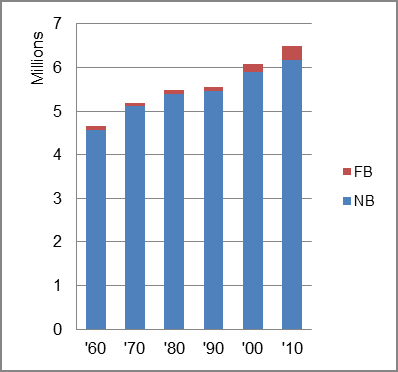

The foreign-born (FB) population increased from 93,203 in 1960 to 300,789 in 2010. That was an increase of 222.7 percent. The foreign-born share changed from 2.0 percent to 4.6 percent.
The share of the overall population that was native-born (NB) increased by 35.3 percent.
Indiana: Population 1960-2010 
The first chart below shows the three population change factors for three periods adjusted for annual average amounts. Natural change (B-D) was the primary factor in population increase in all three periods while NDM changed from a positive factor to a negative one.
The second chart shows the same data but with an adjustment to reflect births to immigrants shifted to NIM. In it, B-D remained the chief factor in population increase, although NIM rose to about two-fifths of overall population increase in the most recent period.
Indiana: Sources of Population Change 1990-2013 Indiana: Sources of Population Change (Adjusted) 1990-2013
B-D NDM NIM B-D NDM NIM 90-'99 72.6% 20.2% 7.1% 90-'99 67.4% 20.2% 12.4% 00-'09 76.1% neg. 23.9% 00-'09 73.3% neg. 30.7% 10-'13 73.9% neg. 26.1% 10-'13 76.1% neg. 41.3%